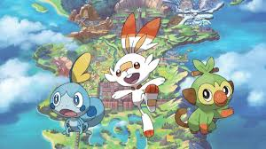

Pokémon Sword and Shield para Nintendo Switch.
Aquí encontrarás información relacionada con el competitivo de Pokémon (VGC), ya sea, tips o información en general, la intención de esta página es informar y mantener al tanto a los jugadores para que puedan progresar con sus equipos.
Si necesitas ayuda o algún Pokémon en especial podrás encontrarlo en nuestra comunidad, de igual manera podrá ayudar a quien necesite alguno.
Para más información respecto a las cosas nuevas que van saliendo vaya a la página de Noticias, ahí se muestra la última información relacionada con el Juego, ya sean torneos o nuevas actualizaciones o las modificaciones realizadas al Battle Stadium.
Encontrarás la información necesaria para empezar a jugar o si ya has comenzado encontrarás información útil para progresar en el ladder, junto con una comunidad en la cual podrás contactar con otros jugadores para practicar, hacer intercambios y más.
